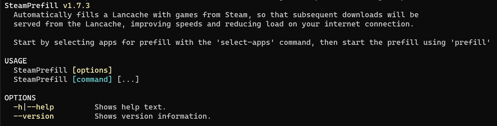

Docker Setup Guide¶
This guide is intended for getting started with the SteamPrefill Docker image (DockerHub), and to become familiarized with how to interact with it. This guide does not intend to be a detailed guide on how to use SteamPrefill itself, which can be found in the Getting Started guide.
Note
Docker is not strictly required to run SteamPrefill, as it is a completely self-contained portable app.
Basic Usage Via Command Line¶
To download and run the latest version of the container, open up a terminal and run the following command:
docker run -it --rm --net=host \
--volume ~/.config/SteamPrefill:/Config \
tpill90/steam-lancache-prefill:latest
This command is the same as running SteamPrefill from the command line with no options, and if successful should produce the following output:

At this point, you will be able to run any of the COMMANDS listed in the output by appending the desired command at the end, for example with select-apps:
docker run -it --rm --net=host \
--volume ~/.config/steam-prefill:/Config \
tpill90/steam-lancache-prefill:latest \
select-apps
Next Steps¶
If you are new to SteamPrefill and would like an introductory tutorial, see the Getting Started guide.
Answers to common issues and questions can be found at Frequently Asked Questions.
Alternatively, to see all of the features that SteamPrefill offers, take a look at Detailed command usage